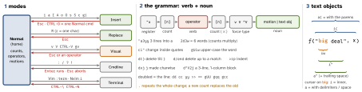

dev-tools · folio
In one line: Normal mode is a language: ["x][count] operator [count] motion|text-object
("a2yy, ci", gUiw). An operator typed twice acts on the line
(dd, >>); . repeats the last change; every motion is
exclusive, inclusive or linewise. Registers are text, a macro is a
register, undo is a tree. Same grammar in Vim 9.2 and Neovim 0.12.
Download PDF Print view LaTeX source


Operators — the verbs
| c | change = delete, then Insert | gq gw | format (gw: cursor stays) | ||
| d | delete (into a register) | g~ gu gU | swap · lower · upper case | ||
| y | yank = copy | g? | ROT13 | ||
| > < | shift by 'shiftwidth' | ! | filter through a program | ||
| = | re-indent ('equalprg') | zf | create a fold | ||
| gc | comment: Nvim 0.10+; Vim packadd! comment | g@ | your own: calls 'operatorfunc' |
Shorthands: x=dl · X=dh · D=d$ · C=c$ · s=cl · S=cc · Y=yy (Nvim maps it to y$) · ~ swaps one char · J / gJ join with / without a space · rx replaces one char · xp swaps two chars, ddp two lines.
Motions — exclusive, inclusive, linewise
Exclusive leaves the end char out, inclusive keeps it, linewise takes whole lines: dw · de · dj.
| keys | to | type | |
|---|---|---|---|
| h l · j k | char · line | exc · line | |
| w b · e ge | word start · word end (W B E gE: WORD) | exc · inc | |
| 0 ^ · $ g_ | col 1 · first non-blank · end · last non-blank | exc · inc | |
| f t · F T | onto / till a char → · ← ; ; , repeat / reverse | inc · exc | |
| % | the bracket matching the next ( [ { on the line | inc | |
| ( ) { } | sentence · paragraph | exc | |
| [( [{ ]) ]} | enclosing unmatched bracket | exc | |
| gg G · 50% | first · last (or Nth) line · 50 % down | line | |
| H M L | top · middle · bottom of the window | line | |
| / ? n N * # | search; * # = word under cursor | exc | |
| `a · ’a | mark: exact spot · its line | exc · line | |
| gj gk | display line (wrapped text) | exc |
word = letters, digits, _ ('iskeyword') or a run of other non-blanks; WORD = any non-blank run: foo.bar(x) is 6 words, 1 WORD. Force: v charwise (flips inc/exc), V linewise, CTRL-V blockwise. Special: cw acts as ce on a non-blank (the space survives); dw on a line’s last word stops at the line end, not on the next line.
Text objects — the nouns
Only after an operator or in Visual: iw aw iW · is ip · i( i{ i[ i< (= ib, iB) · it at tags · i" i' i`. Quote objects stay within one line. A count reaches outer levels: d2i( empties the second enclosing ( ). In Visual a repeated aw / ip extends by one object, a repeated it takes the tags. Nvim 0.12: Visual an / in grow / shrink it by LSP selection range.
Insert and Visual
Insert: CTRL-W word back · CTRL-U what was typed on the line · CTRL-Rr put a register · CTRL-A the last insert again · CTRL-O one Normal command · CTRL-T / CTRL-D indent ± · CTRL-V next key literally · CTRL-K e: → ë · CTRL-N / CTRL-P complete · CTRL-X CTRL-L line, CTRL-X CTRL-F file name · CTRL-G u new undo step · gi resume the last insert. Vim 9.2: fuzzy completion, CTRL-X CTRL-R words from registers; Nvim 0.12: 'autocomplete'.
Visual: gv reselect · o other end · : pre-types :'<,'> · . redoes it on the same amount of text · p puts over it (old text → ""), P keeps registers · block I, A, $A + text + Esc → every line; c and rx likewise · gn = next match: cgnnewEsc, then . . · Nvim: Visual * # search the selection; in linewise Visual @a / Q run on each line.
Vim 9.2 vs Neovim 0.12 (2026)
| Vim 9.2 (14 Feb) | Neovim 0.12 (29 Mar) | |
|---|---|---|
| config | ~/.vimrc, ~/.vim/vimrc, then ~/.config/vim/vimrc (new); none: defaults.vim | ~/.config/nvim/init.lua or init.vim |
| defaults | 'hlsearch' 'incsearch' off | on, + 'autoindent'; ShaDa, not viminfo |
Y & Q | yy · :s · Ex mode | y$ · :&& · replay last macro |
| LSP | plugins | grn rename grr refs gri gra (0.11) grt (0.12) gO K |
Registers and macros
| "" | unnamed: every d c s x y fills it, named or not; p reads it | |
| "0 | last yank (no register named) — deletes leave it alone | |
| "1 … "9 | deletes ≥1 line, or by % ( ) ` / ? n N { }; each shifts 1 → 9 | |
| "- | small delete (<1 line) | |
| "a … "z | named; "A…"Z append | |
| ". ": "% | last insert · last command line · file name (read-only) | |
| "# "/ | alternate file · last search pattern | |
| "= | expression: "=6*7<CR>p; CTRL-R = in Insert | |
| "* "+ | PRIMARY · CLIPBOARD; Nvim only via a provider (pbcopy, wl-copy, OSC 52 …) | |
| "_ | black hole: delete without clobbering anything |
"ayiw · "ap · CTRL-R a in Insert and on the command line · :reg · lost a delete? "1P, then . . pastes "2, "3 …
Macros: qa…q records keys into "a (qA appends) · @a · 3@a · @@ again · @: last Ex command · Nvim Q = last recorded register (Vim: Ex mode). A macro is register text: "ap, edit, 0"ay$ — or :let @a='0f,D'. :{range}norm[al][!] @a runs it per line from column 1 (!: no mappings). :g/pat/cmd marks matching lines first, then runs cmd on each (a deleted line loses its mark) · :v = :g! · :g/^$/d · :g/x/norm @a.
Search, substitute, filter
\v very magic (all ASCII but letters, digits, _ special: \v(\d+)\s*=) · \m default · \V literal · \{-} lazy · \zs / \ze set the match start / end · \@= \@! ahead, \@<= \@<! behind · \c \C case · \< \> word edges · \_s \_. span lines. * # search \<word\> ('ignorecase' yes, 'smartcase' no); g* without the edges.
:[range]s/pat/rep/[flags] — range % . $ '<,'> .,+3 'a,'b /x/,/y/ · flags g all ('gdefault' flips it), c confirm, i I case, n count only, e quiet, & keep · rep: & the match, \1…\9, ~ the last rep, \u \U…\E case, \r line break, \= expression. Empty pattern = the last used one: *, then :%s//x/g. & repeats without the flags (Nvim maps it to :&&) · g& = :%s//~/& on every line. Filters: !{motion}cmd · !!cmd · :%!sort · :r !cmd output below · :w !cmd lines to stdin · built in :sort u; Nvim 0.12 :uniq.
Undo is a tree
One undo = one command or one Insert session (CTRL-G u splits it) · U (last changed line) is itself a change · :earlier 10m · :later 30s · :earlier 2f (file writes) · :undo 3 · :undolist · Nvim 0.12: :packadd nvim.undotree, :Undotree · 'undofile' (off by default) persists it; ignored if the file changed outside (hash check).
Marks, jumps, windows
ma · `a spot / 'a line · a–z per buffer, A–Z across files, 0–9 from viminfo / ShaDa · `[ `] last change or yank · `< `> last Visual · `` before the last jump · `" last exit · `. last change. Jumplist (100): CTRL-O / CTRL-I; jumps are G / ?
n N % ( ) { } H M L, marks, :s, :tag, a new file — not j k w; Nvim 'jumpoptions' default clean. Changelist: g; g,.
Buffer = text in memory · window = a viewport on a buffer · tab = a set of windows. :ls · :b3 · CTRL-^ alternate · :sp stacked, :vs side by side · CTRL-W hjkl w p go, HJKL move, T to a tab, o only, = equalise · :bufdo :windo :cdo · ZZ = :x (writes only if modified) · ZQ = :q!.
Traps
- A vimrc skips defaults.vim:
'incsearch'stays off andCTRL-Aturns007into010(octal). - A delete overwrites
"": paste the yank with"0p, or delete into"_. \nin a replacement inserts a NUL;\rbreaks the line.:spis the horizontal split (stacked);:vsthe vertical one.